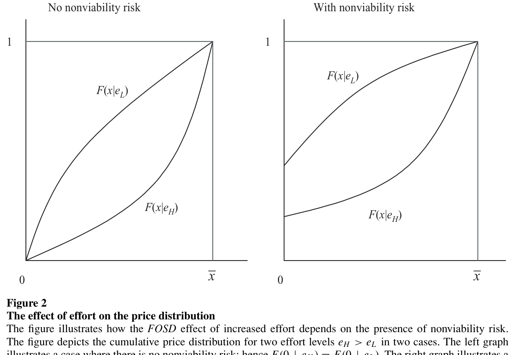
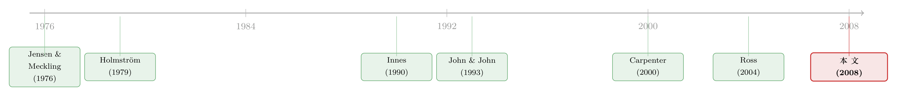

股票还是期权？把「破产」写进高管的工资条
本文读的是 Kadan & Swinkels (2008, Review of Financial Studies)：在一个对风险厌恶的经理人发放薪酬的委托代理模型里，作者证明——只要「公司活不下去」的风险不大，股票期权永远比股票更能激励努力；唯有当经理人的努力直接关系到公司能否存活（财务困境、初创企业）时，限制性股票才可能反超期权。他们还用 1992–2004 年的美国数据验证：破产风险越高的公司，越倾向于用限制性股票发薪。
1 引言：同一年，三家公司给出了三种答案
先看三条新闻。
2004 年 2 月，IBM 宣布，今后发给高管的股票期权不再「平价」(at-the-money) 发放，而是把行权价定在比当前市价高出 10% 的位置——也就是说，股价得先涨一成，期权才开始值钱。同年三月，曾经的保险巨头 Conseco 从美国历史上第三大破产案中走出，宣布它的高管们拿到了近 3400 万美元 的奖励，而这些奖励主要是在公司还处于破产保护（Chapter 11）期间授予的限制性股票。可就在大半年前，2003 年 7 月，微软却反其道而行：它宣布彻底放弃股票期权，改用限制性股票——等于把行权价一口气压到了零。
同一段时间，三家公司，三种截然不同的选择。一个把行权价往上抬，一个把行权价压到零，还有一个干脆从破产里爬出来时给高管发了一大笔零行权价的股票。一个自然的问题是：到底什么时候该用股票，什么时候该用期权？
这正是 Kadan 和 Swinkels 想回答的问题。而他们给出的答案，乍一看是反直觉的：对一家健康的公司而言，股票几乎从来不是最优选择——你总能找到一份「行权价略高于零」的期权合约，它在每一个股价水平上付给经理人的钱都更少，却能诱导出严格更高的努力。换句话说，对健康公司，期权同时更便宜、又更有激励。
那 Conseco 为什么偏要用股票？微软又为什么敢把行权价压到零？真正的转折点，藏在一个被以往薪酬理论忽略的变量里——公司会不会直接「死掉」。
2 一个最小的委托代理框架
要把这件事讲清楚，得先把模型的骨架立起来。它其实非常精简。
一群风险中性的投资者（委托人 principal）拥有一家公司，公司雇一位风险厌恶且厌恶努力的经理人（代理人 agent）。经理人对最终财富 \(w\) 有效用 \(u(w)\)，满足 \(u'>0,\ u''<0\)——这就是「风险厌恶」的数学写法：钱越多，多挣一块钱带来的边际效用越低。
经理人选择努力水平 \(e\in[0,\bar e]\)，努力不可观测，成本为 \(\psi(e)\)（\(\psi'>0,\ \psi''>0\)）。效用是可加可分的：选了努力 \(e\)、最终拿到财富 \(w\) 的经理人，净效用是 \(u(w)-\psi(e)\)。
努力选定后，公司的终值 \(x\in[0,\bar x]\) 随机实现，分布为 \(F(x\mid e)\)。这里有两个关键设定。第一，更高的努力让股价分布按严格一阶随机占优 (first-order stochastic dominance, FOSD) 向右移动，即 \(F_e(x\mid e)<0\)（多努力，低股价的概率变小）。第二——这是全文的灵魂——作者允许股价以正的概率取零，即 \(F(0\mid e)>0\)。他们把这件事叫做 非生存风险（nonviability risk）：典型例子是破产，也可以是初创企业产品卖不出去、融不到下一轮钱而夭折。
经理人的薪酬是股价的函数 \(\pi(x)\)。于是给定努力 \(e\) 和合约 \(\pi\)，经理人的期望效用为：
$$U^M(\pi,e)\equiv F(0\mid e)\,u(\pi(0))+\int_0^{\bar x} u(\pi(x))\,f(x\mid e)\,dx-\psi(e)$$
第一项是公司「死掉」（\(x=0\)）时拿到的钱（你可以理解成事前发的底薪 \(\pi(0)\)），第二项是公司存活时的报酬。
接着，一个现实约束登场了：薪酬不能为负，而且公司通常无法撤回此前已经授予的股票或期权。这意味着经理人手里那一篮子「既得」的股票期权，构成了新合约支付的一个下界 \(m(x)\)：
$$\pi(x)\ge m(x)\quad\forall x$$
如果只是有个底薪或有限责任，\(m(x)\) 就是个常数；如果有不可撤回的既往持股，\(m(x)\) 就随股价递增。这个「最低支付约束」(minimum payment constraint) 看似不起眼，却是后文一切结论的技术起点。
作者特意指出：在这个设定下，参与约束 (individual rationality, IR) 可以不绑定。标准的 Holmström (1979) 框架里 IR 永远绑定——因为你总能把经理人的效用整体压低一点而不动激励。但一旦支付有下界（钱不能为负、股票不能撤回），这招就失效了。现实中，多数 CEO 在公司内拿的钱也确实远超其外部机会。所以本文主要分析 IR 不绑定的情形。
3 核心机制：边际效用与那段「麻木区」
模型搭好了，接着要问：一份合约到底是怎么「激励」努力的？ 这一步是理解全文的钥匙。
对经理人的努力激励（扣除努力成本前）由下式度量：
$$I(\pi,e)=u(\pi(0))F_e(0\mid e)+\int_0^{\bar x} u(\pi(x))\,f_e(x\mid e)\,dx$$
这个式子看着抽象，但对它分部积分，立刻变得直观无比：
$$I(\pi,e)=-\int_0^{\bar x} u'(\pi(x))\,\pi'(x)\,F_e(x\mid e)\,dx$$
读这个式子要盯住三样东西的乘积：\(u'(\pi(x))\) 是经理人在该股价处的边际效用，\(\pi'(x)\) 是薪酬对股价的敏感度（合约在这点有多「陡」），\(F_e(x\mid e)\) 是努力对「股价低于 \(x\) 的概率」的影响（努力在哪段股价上最「管用」）。一句话：要激励努力，就该在「努力最能改变命运」的那段股价区间上，让经理人的边际效用尽量高、让薪酬尽量陡。
现在把合约具体化成股票或期权。本文考虑的合约形如：
$$\pi(x)=m(x)+\alpha\max(0,\,x-k)$$
其中 \(\alpha\) 是新授予的期权占公司的比例，\(k\) 是行权价。\(k=0\) 就退化成股票，\(k>0\) 就是期权。于是一份合约可以用一对数 \((\alpha,k)\) 表示。
这里就要请出本文那张最关键的图（图 1，论文原图）所刻画的画面了。横轴是股价，纵轴是经理人的效用。当股价低于行权价 \(k\) 时，期权一文不值，经理人拿到的永远是 \(u(m)\)——他对这段区间里的股价涨跌完全不在乎。作者给这段区间起了个传神的名字：麻木区 (numb region) \([0,k)\)。而当股价越过 \(k\)，效用开始上升、且因为风险厌恶而是凹的。
关键的张力就出在这里。
假设我们把行权价从 \(k_1\) 往上抬到 \(k_2\)，会发生两件相反的事：
- 坏处：麻木区被拉长了，经理人对更大一片股价区间「无动于衷」；
- 好处：在 \(k_2\) 以上，经理人更穷了，于是边际效用更高——对任意 \(x\in[k_2,\bar x)\)，都有 \(u'(m+\alpha(x-k_2))>u'(m+\alpha(x-k_1))\)。说白了，抬高行权价让经理人「更饿」，因而对股价上涨更敏感、更卖力。
抬高行权价对努力的净效果，正是这「饿」与「麻木」两股力量的角力。把它写成数学，就是全文的中枢方程——行权价对激励的边际影响 \(\partial I/\partial k\)：
这条方程几乎包含了本文的全部经济学。第一项（负）代表麻木区的扩大对激励的伤害；第二项（正）代表经理人变「饿」带来的激励增益。期权到底好不好，全看在某个行权价处，这两项谁压倒谁。
4 关键反转：当「努力」决定公司的生死
讲到这，一个自然的问题是：那到底什么时候该选 \(k>0\)（期权），什么时候该选 \(k=0\)（股票）？
把上面那条中枢方程在 \(k=0\) 处求值，就能看清答案。先看没有非生存风险的情形：\(F(0\mid e)\equiv 0\)，于是 \(F_e(0\mid e)=0\)，在零附近 \(|F_e|\) 很小。这意味着方程里那个「负」的麻木区项，在 \(k=0\) 附近是二阶小量——几乎可以忽略；而「正」的变饿项却带来一阶的激励改善。两相比较，从纯股票出发，把行权价往上挪一点点，激励净增加，而合约还更便宜。于是有：
命题 1（Proposition 1）：若对所有 \(e\) 都有 \(F(0\mid e)=0\)（无非生存风险），则对任何包含纯股票的合约，都存在一份基于期权的合约，它在每一个股价实现处付给经理人的钱都更少，却诱导出严格更高的努力。
推论 1（Corollary 1）：无非生存风险时，给经理人发股票从来不是最优的。
直觉上：在股票/期权这类合约下，薪酬上涨的速度永远不会超过公司总价值的上涨速度，于是投资者的净收益 \(x-\pi(x)\) 是不减的（这正是论文 Lemma 2 的条件）——把零附近的薪酬压到下界，对激励只有二阶的伤害，却在别处全面改善激励，投资者严格地更好。健康、稳定的公司，应当偏好期权。
可一旦经理人的努力直接影响公司能否存活，故事就反转了。此时 \(F_e(0\mid e)\ne 0\)，中枢方程在 \(k=0\) 处变成：
$$\left.\frac{\partial I}{\partial k}\right|_{k=0}=\alpha\,u'(m(0))\,F_e(0\mid e)+\alpha\int_0^{\bar x} u''(m(x)+\alpha x)\,(m'(x)+\alpha)\,F_e(x\mid e)\,dx$$
第二项依旧为正，但第一项不再是可忽略的二阶小量——它反映的是「努力避免破产」的价值，而且是负的。当非生存风险足够大时，第一项可以压倒第二项：此时把行权价抬离零，反而伤害激励。于是纯股票（\(k=0\)）可能才是最优的。
为什么？因为公司命运对努力最敏感的地方，恰恰是股价接近零的那一带。如果你用期权把这一带划进了「麻木区」，经理人就对「公司会不会死」这件最要命的事失去了动力。论文的图 2 把这个直觉画得很清楚：

Figure 2: clarifies the intuition behind this result. It depicts cumulative dis-
如图 2 所示，左图是没有非生存风险的情形——两条不同努力水平 \(e_H>e_L\) 的累积分布曲线在零点重合（\(F(0\mid e_H)=F(0\mid e_L)\)），努力在零附近几乎不起作用；右图则在零点有一个「原子」(atom)，且这个「死亡概率」会被努力显著改变，于是零附近恰恰是努力最值钱的地方。
这就解释了开篇那三条新闻：Conseco 从破产里爬出来时用限制性股票，初创公司在 IPO 前用股票、上市后转向期权——都是因为它们正处在「努力直接决定生死」的阶段；而 IBM 这样的健康巨头把行权价抬高 10%，恰恰是教科书式的「让经理人更饿」。
5 「太富、太快」：多发期权反而会偷走努力
模型还藏着一个更违反直觉的推论，值得单独点出。
人们通常以为，多给经理人发点期权或股票，他总会更卖力吧？未必。 回到那条分部积分后的激励方程 \(I=-\int_0^{\bar x}\frac{\partial}{\partial x}u(\pi(x))\,F_e(x\mid e)\,dx\)。对一份 \((\alpha,k)\) 合约、在 \(x\ge k\) 处，效用对股价的导数是：
$$\frac{\partial}{\partial x}u(m+\alpha(x-k))=\alpha\,u'(m+\alpha(x-k))$$
如果经理人风险中性，这一项随 \(\alpha\) 单调上升——发得越多越卖力。可对一个风险厌恶的经理人，\(\alpha\) 增大会让他在中等股价处就变得相当富有，从而 \(u'\) 急剧下降——\(u'\) 的下跌可能压过 \(\alpha\) 的上升。于是：
命题 2（Proposition 2）：增加授予的期权（或股票）数量，可能反而损害激励。
作者给它起了个很形象的名字——「太富，太快」(too rich too soon)。一份设计糟糕的期权合约，会让一个风险厌恶的健康公司经理人在中等股价上就「赚饱了」，对更高股价的激励彻底麻木。把一份本就设计不当的薪酬合约「按比例放大」，只会把经理人推得更不愿意努力。（关于期权在不同状态下激励的「咬人」方式，可参见《高管手里的「波动率期权」，为什么只在寒冬里咬人？》。）
6 文献脉络
把这篇论文放回它生长的那条脉络里，会更清楚它的位置。
最早，关于期权薪酬的理论几乎都在谈一件事——风险态度。Jensen 和 Meckling (1976) 的经典观点是：期权会诱导经理人多冒险。这个「期权 = 鼓励冒险」的直觉统治了很久，直到 Carpenter (2000) 和 Ross (2004) 指出，期权对冒险的影响其实是模糊的，取决于经理人的效用函数本身。本文则把镜头从「冒险」转向了「努力」——但结论是互补的：薪酬的变化可能以出人意料的方式改变努力，而努力又会改变股价的波动。

另一条线是道德风险与有限责任。Holmström (1979) 奠定了道德风险的标准框架，其中参与约束永远绑定。Innes (1990) 在一个有限责任、但经理人风险中性、且无破产风险的设定下研究债务合约——而风险厌恶与非生存风险，恰恰是本文结论的两块基石。Lambert 和 Larcker (2004) 讨论了有限责任下的委托代理问题，但没有非生存风险，他们那里的最优合约总是期权式的。
还有一条线把资本结构与高管薪酬联系起来：John 和 John (1993) 证明，债务越高，经理人薪酬对股价的最优敏感度反而越低；Berkovitch et al. (2000)、Cadenillas et al. (2004) 也从风险债务的角度切入。但把「公司能否存活」这件事直接写进最优薪酬设计，本文是第一篇。它的贡献，正是在「股票 vs 期权」这个老问题上，找到了一个以往被完全忽略的、却又干净有力的决定因素。
7 实证证据：破产风险越高，越爱用股票
理论给出了一个清晰的、可检验的预言：破产风险越高的公司，越倾向于用限制性股票（而非期权）发薪。 作者用 1992–2004 年的美国数据做了检验。
他们用了三个破产风险的代理变量：Altman (1968) 的 Z-Score、Bharath 和 Shumway (2004) 的 KMV-Merton 预期违约概率，以及债务评级。结果与理论方向一致且显著：Z-Score 越低、KMV-Merton 违约概率越高、债务评级越低的公司，越可能用限制性股票来给 CEO 发薪，并且限制性股票在「股票类薪酬总额」中的占比也越高。回归还控制了公司特征、经理人既有持股，以及限制性股票相对期权在税收与费用化规则上的差异。
这里要诚实：本文给出的是相关性而非因果。破产风险与薪酬结构很可能由同一批未观测因素共同驱动（比如行业、成长性、治理质量），论文的实证部分也主要是为理论的可检验含义提供「一致的证据」，而非干净的识别。把它读成「困境企业确实更爱用股票」是稳妥的，读成「破产风险导致用股票」则需谨慎。
评论与延伸（Q&A + 研究方向）
(a) 几个可能的疑问
Q：这篇文章说期权几乎总优于股票，可现实里限制性股票越用越多，矛盾吗？
不矛盾，反而正是本文的卖点。理论只说「健康公司应偏好期权」，而把「困境公司、初创公司偏好股票」也内生地解释了。再叠加税收（限制性股票与期权的税务待遇不同）、会计费用化规则（2003 年后期权要费用化，削弱了它的相对优势）等模型外因素，限制性股票总体上升与「困境公司用股票」可以并行不悖。
Q：核心机制和「期权鼓励冒险」的老故事是一回事吗？
不是。老故事（Jensen & Meckling 1976）讲的是期权的凸性如何改变经理人的风险偏好；本文讲的是期权的麻木区与风险厌恶下的边际效用如何改变努力。两者维度不同——一个是「敢不敢赌」，一个是「肯不肯干」。Carpenter (2000)、Ross (2004) 已经说明冒险那条线本身是模糊的，本文等于在另一条线上补了一块拼图。
Q：为什么「最低支付约束」这么关键？没有它会怎样？
没有它（即允许任意负支付），委托人总能通过参与约束把激励「拧」到任意区间，股票和期权的差别就被抹平了。正是因为钱不能为负、既往股票不能撤回，薪酬才有了一个下界，于是「在一处更陡」就必然意味着「在更高处经理人更富、更不敏感」——本文那个核心权衡才得以成立。
Q：把「公司价值 \(x\)」直接当成「股价」来分，会不会过于简化？
作者在脚注里也承认这是一种简化（脚注 6）：真实世界里薪酬是股价的函数，而股价分布本身又取决于薪酬，存在循环。把 \(x\) 当作「待分配的公司价值」回避了这个技术难题。作者认为对实务目的而言差异通常很小，但严格来说这是个建模取舍。
Q：「太富太快」这个推论有没有现实证据？
模型层面是干净的（命题 2）：风险厌恶下 \(u'\) 的下降可压过 \(\alpha\) 的上升。现实中是否真有公司因为「发了太多期权」而让 CEO 变懒，本文没有直接检验——这是个开放的实证问题，也是下文研究方向之一。
Q：第一阶方法 (first-order approach) 在这里靠谱吗？
作者用了分布函数凸性条件 (Convexity of the Distribution Function Condition, CDFC, 即 \(F_{ee}\ge 0\)) 来保证一阶条件充分（Lemma 1），并指出他们关心的合约都是不减的，因而适用。需要留意的是，期权式合约天然带来一处非凹，Jewitt (1988) 的条件在此不适用；但其核心结论（无非生存风险时期权占优）在 Jewitt 条件下仍成立，因为基准合约——股票——没有那处非凹。
(b) 几个可能的研究问题与提案
1. 把这套逻辑搬到公司债 / 信用市场
【经济故事】本文的「非生存风险」本质上就是违约风险，而债权人和股东对「努力避免破产」的偏好天然不同。一个自然的问题是：当一家公司同时面对股东和债权人，最优薪酬里股票/期权的配比，会不会随杠杆与信用利差系统性地变化？John & John (1993) 给了理论方向，本文给了「股票 vs 期权」的微观机制，二者尚未被打通。 【可行性】中。需要 Execucomp（薪酬结构）+ 公司债评级/利差数据（如 TRACE、Mergent FISD）+ KMV 违约概率，识别上可借「评级跨越投资级门槛」之类的断点。数据可得，但内生性（杠杆与薪酬共同决定）需要好工具。
2. 2003 年期权费用化改革作为自然实验
【经济故事】FAS 123R 要求期权费用化，外生地削弱了期权相对限制性股票的吸引力。本文预言：困境公司本就该用股票，因此这场改革对它们薪酬结构的冲击应当更小——困境公司的「股票占比」对改革不敏感，健康公司则被推着从期权转向股票。这是一个可以检验的异质性预测。 【可行性】高。Execucomp 覆盖了改革前后，DiD + 按 Z-Score / 违约概率分组的异质性检验即可实施，识别相对干净。
3. 「太富太快」的直接检验
【经济故事】命题 2 说多发期权可能降低努力。能否找到一个外生改变 CEO 财富的冲击（如既往期权因股价大涨而深度实值），看其后续努力代理变量（专利、投资、并购活跃度）是否下降？这正面挑战「股权激励越多越好」的常识。 【可行性】中。难点在「努力」不可观测，需要好的代理变量；可借股价的外生波动（行业冲击）构造 CEO 既有期权价值的工具，但要小心财富效应与机会集变化的混淆。
4. 初创企业的「股票→期权」迁移路径
【经济故事】本文预测初创公司应在早期用股票、IPO 后随非生存风险下降转向期权。用 IPO 前后的薪酬合约数据，能否直接看到这条迁移轨迹？ 【可行性】中低。IPO 前的私人公司薪酬数据稀缺，主要靠招股书与少量手工搜集的样本；样本量与代表性是主要约束。
参考文献
- Altman, E. I. (1968). Financial Ratios, Discriminant Analysis, and the Prediction of Corporate Bankruptcy. Journal of Finance 23(4), 589–609.
- Berkovitch, E., Israel, R., & Spiegel, Y. (2000). Managerial Compensation and Capital Structure. Journal of Economics and Management Strategy 9(4), 549–584.
- Bharath, S. T., & Shumway, T. (2004). Forecasting Default with the KMV-Merton Model. Working Paper, University of Michigan.
- Cadenillas, A., Cvitanić, J., & Zapatero, F. (2004). Leverage Decision and Manager Compensation with Choice of Effort and Volatility. Journal of Financial Economics 73(1), 71–92.
- Carpenter, J. (2000). Does Option Compensation Increase Managerial Risk Appetite? Journal of Finance 55(5), 2311–2331.
- Hall, B. J., & Murphy, K. J. (2000). Optimal Exercise Prices for Executive Stock Options. American Economic Review 90(2), 209–214.
- Hemmer, T., Kim, O., & Verrecchia, R. E. (2000). Introducing Convexity into Optimal Compensation Contracts. Journal of Accounting and Economics 28(3), 307–327.
- Holmström, B. (1979). Moral Hazard and Observability. Bell Journal of Economics 10(1), 74–91.
- Innes, R. D. (1990). Limited Liability and Incentive Contracting with Ex-Ante Action Choices. Journal of Economic Theory 52(1), 45–67.
- Jensen, M., & Meckling, W. (1976). Theory of the Firm: Managerial Behavior, Agency Costs, and Ownership Structure. Journal of Financial Economics 3(4), 305–360.
- Jewitt, I. (1988). Justifying the First-Order Approach to Principal-Agent Problems. Econometrica 56(5), 1177–1190.
- John, T. A., & John, K. (1993). Top Management Compensation and Capital Structure. Journal of Finance 48(3), 949–974.
- Kadan, O., & Swinkels, J. M. (2008). Stocks or Options? Moral Hazard, Firm Viability, and the Design of Compensation Contracts. Review of Financial Studies 21(1), 451–482.
- Lambert, R. A., & Larcker, D. F. (2004). Stock Options, Restricted Stock, and Incentives. Working Paper, University of Pennsylvania.
- Lambert, R. A., Larcker, D. F., & Verrecchia, R. E. (1991). Portfolio Considerations in Valuing Executive Compensation. Journal of Accounting Research 29(1), 129–149.
- Ross, S. (2004). Compensation, Incentives, and the Duality of Risk Aversion and Riskiness. Journal of Finance 59(1), 207–225.
- Zwiebel, J. (1996). Dynamic Capital Structure under Managerial Entrenchment. American Economic Review 86(5), 1197–1215.